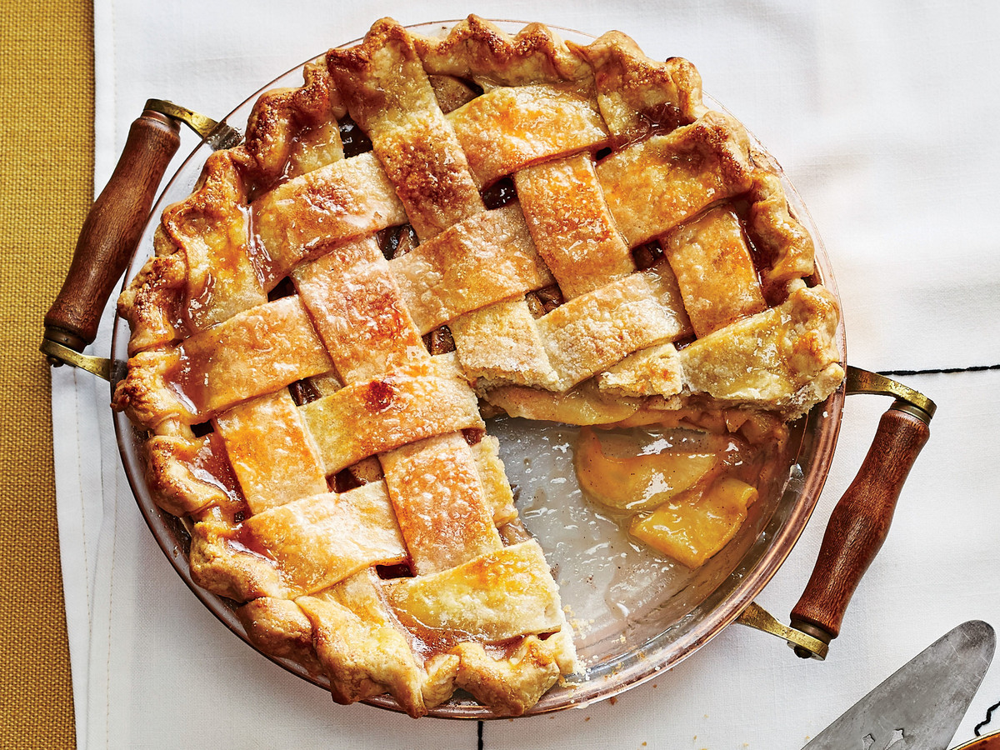
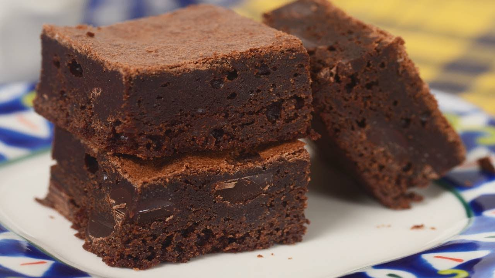
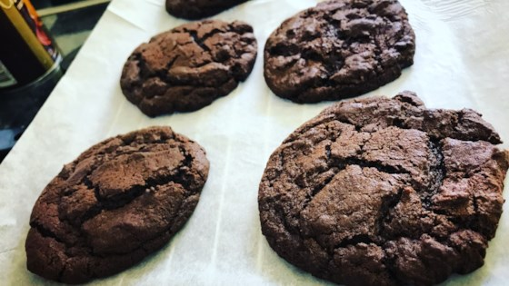
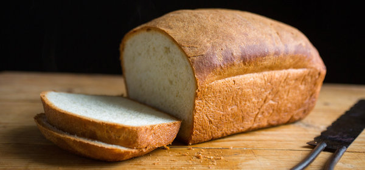

| Ingredients |
Directions |
| 1/2 cup unsalted butter |
Preheat oven to 425F |
| 1 Recipe Pastry for a 9 in pie |
Melt the butter in the saucepan |
| 3 Tbs all-porpose flour |
Stir in flour to form a paste |
| 1/4 cup water |
Add water, White sugar, and Brown sugar and bring to a boil |
| 1/2 white sugar |
Let simmer |
| 8 granny smith apples: cored, peeled, and sliced |
Place crust in pan, fill with apples |
| 1/2 cup packed brown sugar |
Cover w. lattice work crust |
| - |
Pour the sugar/butter liquid slowly on |
| - |
Bake 15 min, then reduce the temp to 350 and bake for 45 more minutes |

| Ingredients |
Directions |
| 1/2 c butter |
Preheat oven to 350F and grease and flour an 8 in square pan |
| 1 c white sugar |
melt 1/2 cup butter, then remove from heat and stir in eggs, sugar, and vanilla |
| 3 eggs |
beat in cocao, flour, salt, and baking powder |
| 1 tsp vanilla extract |
Spread batter into prepared pan |
| 1/2 cocao powder (unsweetened) |
bake in over for 25-30 min |
| 1/2 c all-porpose flour |
- |
| 1/4 tsp salt |
- |
| 1/4 tsp baking powder |
- |

| Ingredients |
Directions |
| 1 1/4 caup soft margarine |
Preheat oven to 350 |
| 2 c white sugar |
Cream margarine and sugar until smooth |
| 2 eggs |
beat in eggs one at a time, then stir in vanilla |
| 2 tsp vanilla extract |
combine flour, cocao, baking soda, and Salt, the stir into the creamed mixture |
| 2 c all-porpose flour |
mix in walnuts |
| 3/4 cup unsweetened cocao powder |
drop onto cookie sheets by the spoonful |
| 1 tsp baking soda |
bake for 10 minutes |
| 1/8 tsp Salt |
cool on cookie sheet for a few minutes |
| 1 cup chopped walnuts |
Cool completely on wire racks |

| Ingredients |
Directions |
| 1 package of active dry yeast |
Dissolve yeast and 1/2 tsp sugar in warm water |
| 2 1/4 cups warm water |
let stand until bubbles form, then whisk the rest of the sugar, the salt and 3 c flour |
| 3 Tblsp sugar and 1/2 tsp sugar |
stir oi; into yeast, pour into flour mixture and beat until smooth, then stir in flour 1/2 cup at time |
| 1 Tblsp salt |
Knead on flour surface for about 10 minutes |
| 2 Tblsp Canola oil |
place in greased bowl, turn over once, cover and allow it to rise in a warm place for 2 hours |
| 6 1/2 c bread flour |
Punch dough down, turn onto lightly flowered surface and divide dough in two and shape both into a loaf |
| - |
place in 2 greased 9x5 in pans, than cover and let rise for 2 hours |
| - |
bake at 375 until golden brown and bread sounds hollow when tapped or an internal temprature of 200F |
| - |
cool on wire racks |
